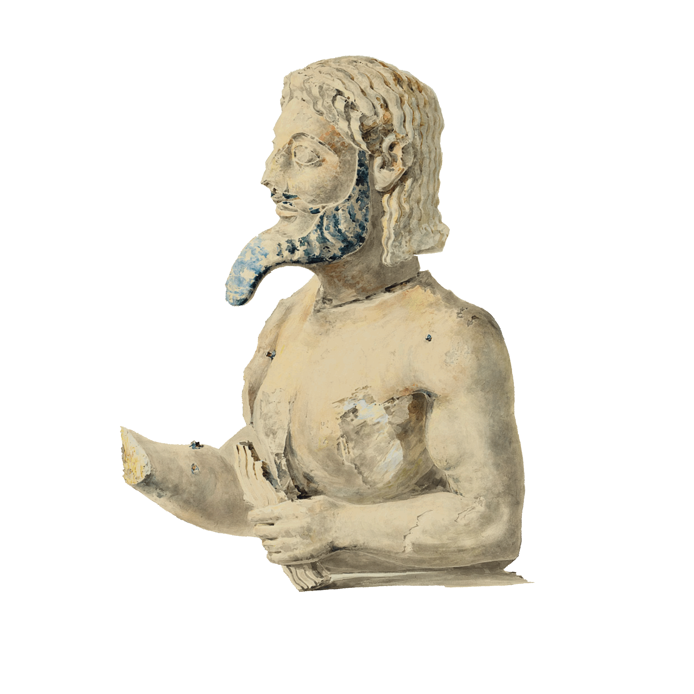

Watercolors
of the
Acropolis
Émile Gilliéron
in Athens
MAY
13, 2019
–
JANUARY
5, 2020
EXHIBITION
OVERVIEW
A virtuoso watercolorist, Émile Gilliéron (1850–1924) became the most important draftsman and popularizer of archaeological discoveries in Greece following his arrival in Athens in the late 1870s. The exhibition features five drawings—three of them more than eleven feet long—that depict architectural sculptures from the Athenian Acropolis. In addition to their documentary value, the drawings capture the power of the ancient sculptures’ mythological subjects, their effect intensified by the surviving traces of original color.
The exhibition is made possible by The Vlachos Family Fund.
The Bulletin is made possible in part by The Ceres Foundation, Inc., The Prospect Hill Foundation, and the Jenny Boondas Fund. The Met’s quarterly Bulletin program is supported by the Lila Acheson Wallace Fund for The Metropolitan Museum of Art, established by the cofounder of Reader’s Digest.